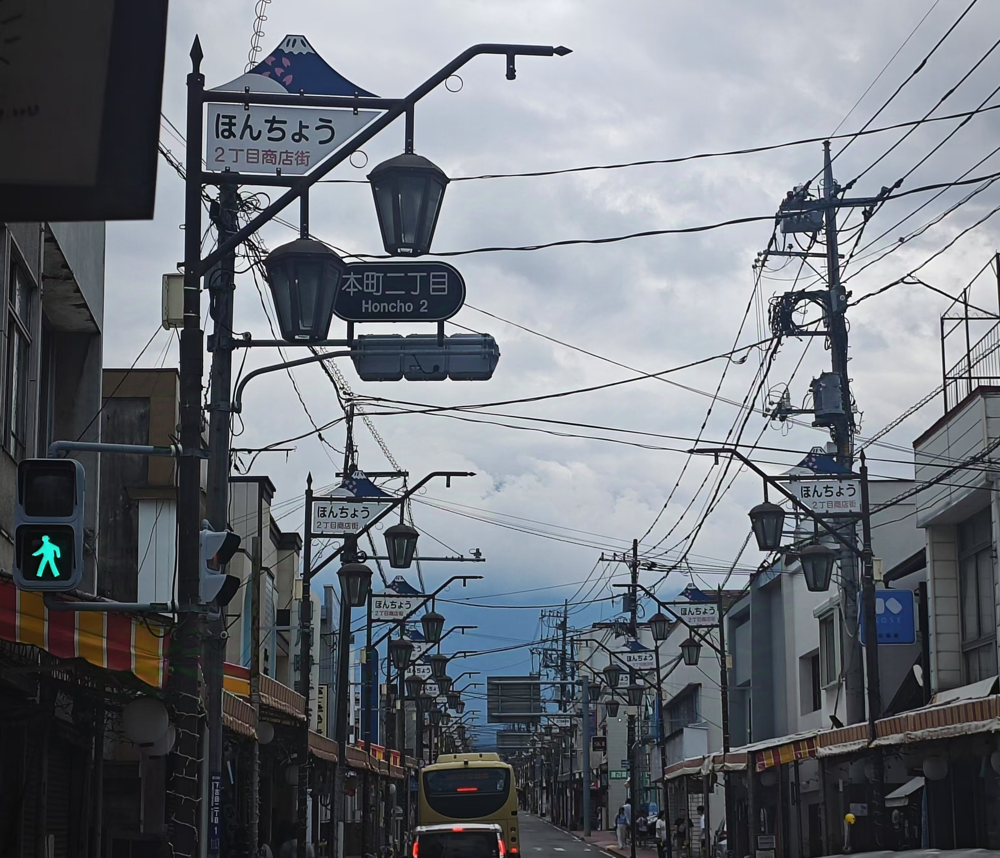
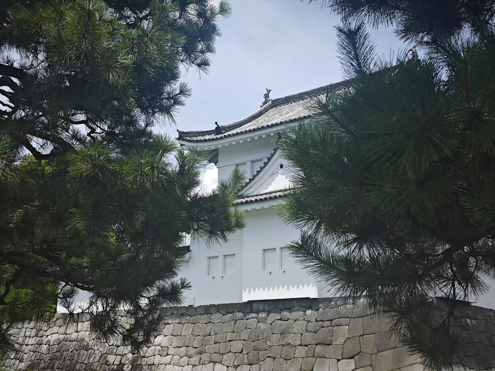
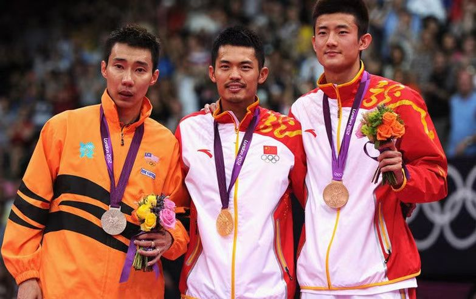
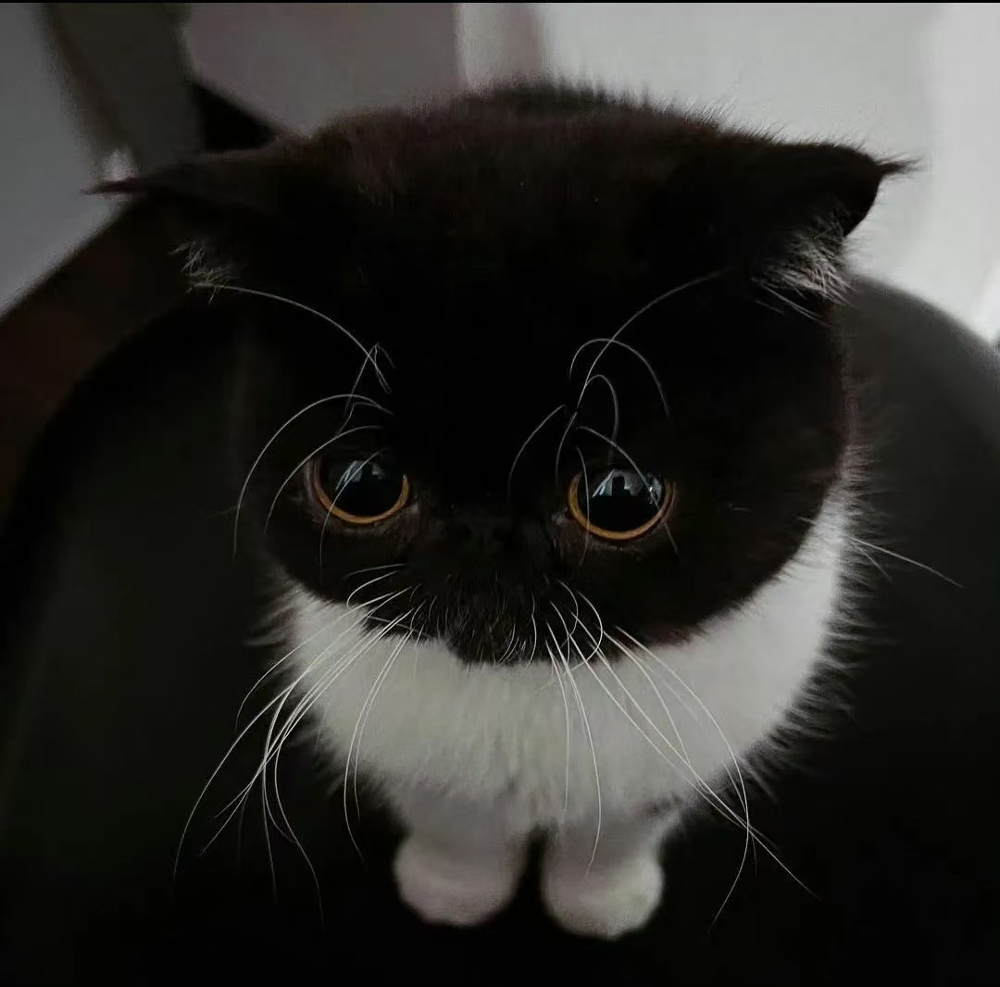
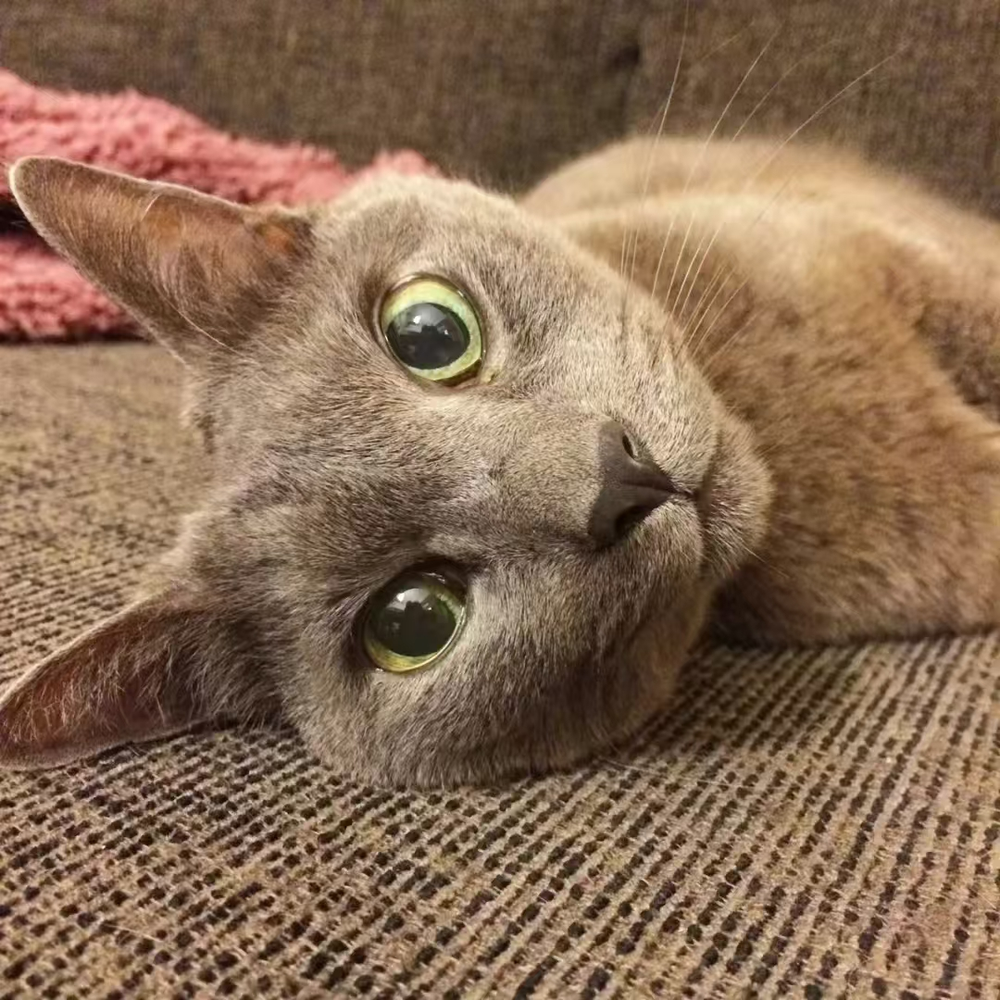

旅行的意义，便是旅行本身


运动人生
即使失败，它在我生命中凿刻下的痕迹，也将会是光荣的印记。
无论未来走到哪里，我都会像一个充满斗志的战士，不断征战。无论面对什么状况，永远都知道要怎样重新再出发。

第九艺术是游戏，但游戏不都是第九艺术
Electronic gaming, the ninth art, creates immersive worlds where players actively shape adventures. With diverse narratives and global connections, it challenges, connects, and captivates.
Happily, this year we also have our own ninth art.

圣火昭昭，圣光耀耀，凡我弟子，喵喵喵喵

